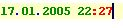
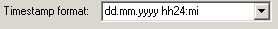

Text -> Datetime Stamp
Previous
Top
Next
Put current date at current position. Date format depend of configuration. For example :
 format is 
See
Text Menu
,
Tools -> Application/Editor Settings...